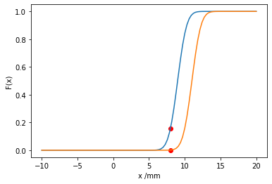
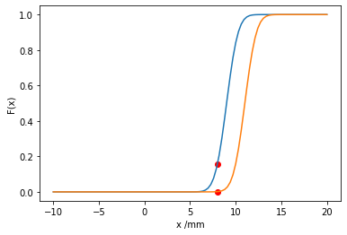

Imprecise probabilistic models of uncertainty¶
Probability Boxes¶
Probability boxes generalise probability distributions and intervals; they model a set of cumulative distribution functions. Probability boxes are used to communicate epistemic uncertainty in the precise form of a probability distribution [FKG+03]. In the particular limiting cases of no epistemic uncertainty and no aleatory uncertainty, traditional CDFs and intervals can be recovered from the probability box, respectively.
Broadly speaking, probability boxes can be split into two types. Distribution-free probability boxes consist of an envelope defined by two CDFs. Any CDF contained within the envelope is permitted, i.e. the probability box contains all cumulative distribution functions \(F(x)\) which satisfy the envelope condition \(\underline{F}(x) \le F(x) \le \overline{F}(x) \forall x\).
Distributional probability boxes consist of a conventional probability distribution where at least one parameter of the distribution is given as an interval rather than a crisp value, i.e. the probability box is given by the probability distribution \(p_{\theta}(x)\) with parameters \(\theta \in \Theta\), where \(\Theta\) is a hyper-rectangular convex set. It is possible to perform a conversion from distributional probability boxes to distribution-free probability boxes, by finding a distribution-free probability box which encloses the distributional probability box. This conversion results in the loss of information about the distribution types enclosed, and hence the conversion can not be easily reversed. The envelope of a distributional probability box, which will be a distribution-free probability box, can be obtained by evaluating
where \(F_\theta(x)\) is the CDF corresponding to the probability distribution \(p_\theta(x)\).
Computation with Probability Boxes¶
Probability boxes are a specific case of a random set [DA15][Alv06], and therefore when they are propagated through a calculation their propagation can be decomposed into two distinct parts; the propagation of a set of epistemic uncertain variables which fall within an uncertain hyper-rectangle \(\theta \in \Theta\), and the propagation of an aleatory set of variables \(\alpha\), which are associated with a probability distribution. The result of propagation through the model is a probability box, rather than a single CDF. The propagation is non-trivial since the epistemic variables are intervals and have no probability distribution, which means that conventional Monte Carlo simulation cannot be applied. Two methods are commonly used to propagate probability boxes: Double Loop Monte Carlo (sometimes referred to as search or optimisation of the epistemic space), and integration of the aleatory variables [PABA14].
For a distributional probability box the upper and lower expectation are defined by
and
If \(g(x)\) is linear or easily approximated by a Taylor series then similar approximation techniques to those discussed for probability distributions earlier in the chapter can be applied.
In the general case, to accurately approximate the upper expectation in (5) we can use the Monte Carlo estimator from (2) inside an optimisation routine:
where \(x_{(1)}, \ldots, x_{(M)}\) are drawn from \(p_\theta(x)\). This is known as Double Loop Monte Carlo simulation, and can be applied only in the case of distributional probability boxes. This estimator can be shown to have a positive bias [Tro18]. As is the case with computation with interval models, it is necessary to use a non-linear optimisation routine to evaluate the outer loop in the general case.
The Double Loop Monte Carlo method can be modified to propagate distribution-free probability boxes by drawing the samples required for (6) from a monotonically increasing staircase function, which is parameterised by \(\theta\) and satisfies the envelope condition for the probability box under consideration. However, this approach will be computationally inefficient in general since a high dimensionality \(\theta\) would be required to approximate the probability box with sufficient accuracy, and therefore another approach is required.
For a distribution-free probability box note that one can sample intervals from the probability box by generating random numbers between 0 and 1 and applying inverse transform sampling to \(\overline{F}\) and \(\underline{F}\), i.e. generate sampled intervals \([\underline{x}, \overline{x}] = [\underline{F}^{-1}(\alpha), \overline{F}^{-1}(\alpha)]\) by sampling \(\alpha \sim \mathcal{U}(0, 1)\), where \(\underline{F}^{-1}\) and \(\overline{F}^{-1}\) are the inverse CDFs of the probability box envelopes and \(\mathcal{U}\) is the uniform distribution. The process of generating a single sample is known as taking the \(\alpha\) cut, and the sampled intervals constitute focal elements [DA15]. This process is shown in Fig. 1. One can then propagate these intervals through \(g(x)\) using the techniques described for intervals in the previous section, e.g. using the natural interval extension of \(g(x)\), or using black-box optimisation. Therefore one can calculate the upper expectation as
where \([\underline{x}_{(i)}, \overline{x}_{(i)}]\) are the intervals generated from inverse transform sampling. In this thesis we dedicate most of our attention to the case of Double Loop Monte Carlo simulation for distributional probability boxes.
{kind=link}
Fig. 1 Obtaining samples from a probability box.¶
Worked example : imprecise probability theory¶
The amount of rainfall in mm on a particular day is given by the normal probability box \(p_\mu(x) = \mathcal{N}(\mu,\sigma=1), \mu \in [9, 11]\).
What is the probability of less than 8mm of rainfall?
The probability of less than a certain amount of rainfall is obtained by integrating the probability density function up to that amount. However, a probability box is composed of many probability density functions. Therefore we must find the maximum and minimum such value. This is equivalent to evaluating the maximum and minimum cumulative density function at that value.
\(P(\text{rainfall}<8mm) < \max_{\mu \in [9, 11]}{\int_{-\infty}^{8mm} p_\mu(x) dx} = \overline{F}(x=8mm)\)
\(P(\text{rainfall}<8mm) > \min_{\mu \in [9, 11]}{\int_{-\infty}^{8mm} p_\mu(x) dx} = \underline{F}(x=8mm)\)
Below, we show various probability density functions contained in the probability box. Then the upper and lower bounding CDFs are evaluated at the desired value. This works because the CDF increases monotonically in the mean parameter, and only one parameter is being varied. Such a normally distributed probability box, where only the mean is varied is sometimes known as a ‘combed’ probability box.
import matplotlib.pyplot as plt
import scipy.stats
import numpy as np
import scipy.optimize
import random
print("Upper probability: {}".format(scipy.stats.norm.cdf(8, loc=9, scale=1)))
print("Lower probability: {}".format(scipy.stats.norm.cdf(8, loc=11, scale=1)))
plot_x_range = np.linspace(-10, 20, 100)
plot_x_range_integrate = np.linspace(-10, 8, 100)
for _ in range(10):
plt.plot(
plot_x_range,
scipy.stats.norm.pdf(plot_x_range, loc=9+2*random.random(), scale=1)
)
plt.xlabel("x /mm")
plt.ylabel("p(x)")
plt.show()
plot_x_range = np.linspace(-10, 20, 100)
plt.plot(plot_x_range, scipy.stats.norm.cdf(plot_x_range, loc=9, scale=1))
plt.plot(plot_x_range, scipy.stats.norm.cdf(plot_x_range, loc=11, scale=1))
plt.scatter(8, scipy.stats.norm.cdf(8, loc=11, scale=1), color='red')
plt.scatter(8, scipy.stats.norm.cdf(8, loc=9, scale=1), color='red')
plt.xlabel("x /mm")
plt.ylabel("F(x)")
plt.show()
Upper probability: 0.15865525393145707
Lower probability: 0.0013498980316300933
 

Worked example : Computation with an imprecise probabilistic model¶
Again, the amount of rainfall in mm on a particular day is given by the normal random variable \(p_\mu(x) = \mathcal{N}(\mu,\sigma=1), \mu \in [9, 11]\). It is known that the number of umbrellas sold in London on a particular day is given by \(g(x) = 1000 x^2\).
Estimate the number of umbrellas sold in London given our uncertain model of rainfall.
Analytically evaluating this integral in a popular computer algebra system yields \(\text{Umbrellas sold}\in[82000,122000]\).
# First try double loop Monte Carlo integration
n_samples = 1000
def mc_sim(mu: float):
"""
Performs a Monte Carlo simulation for number of umbrellas sold.
Args:
mu: Mean of random variable
"""
samples_x = scipy.stats.norm(loc=mu, scale=1).rvs(n_samples)
def g(x): return 1000 * x ** 2
return np.mean(g(samples_x)), np.std(g(samples_x)) / np.sqrt(n_samples-1)
min_mu = 9
max_mu = 11
mid_mu = 0.5 * (min_mu + max_mu)
min_mean_umbrellas = scipy.optimize.brute(
lambda x: mc_sim(x)[0],
ranges=((min_mu, max_mu),),
finish=None,
full_output=True
)
neg_max_mean_umbrellas = scipy.optimize.brute(
lambda x: -mc_sim(x)[0],
ranges=((min_mu, max_mu),),
finish=None,
full_output=True
)
print("The expected number of umbrellas sold falls in the interval: {}".format(
[min_mean_umbrellas[1], -neg_max_mean_umbrellas[1]]))
error = mc_sim(mid_mu)[1]
print("The error of this Monte Carlo estimator is {}".format(error))
The expected number of umbrellas sold falls in the interval: [81728.73735918904, 120875.4740479783]
The error of this Monte Carlo estimator is 630.8983034988963
Good agreement is obtained with the analytic calculation. Note that the probabilistic calculation from Worked example : Computation with a probabilistic model falls inside the stated bounds. When performing double loop Monte Carlo simulation as above one must take care to choose an outer loop optimiser which is robust to a stochastic objective function.
Notice in the above code example we use a lambda x: to define an anonymous function to access only the first output of the Monte Carlo simulation function for convenience.
Dempster-Shafer structures¶
A Dempster-Shafer Structure is another form of imprecise probability model which has been widely applied in engineering [RP17]. In this thesis we do not use Dempster-Shafer structures, however we briefly outline the model and the relationship to probability boxes here for context. A Dempster-Shafer (DS) structure represents the assignment of probability mass to intervals rather than point values, as is the case with probability density functions.
Consider the case where probability mass has been assigned to intervals on the real line, \(\{ ([\underline{x}_{(1)}, \overline{x}_{(1)}], p_{(1)}), \ldots , ([\underline{x}_{(n)}, \overline{x}_{(n)}], p_{(n)}) \}\), where \(\sum_{i=1}^n p_{(i)} = 1\). We can define two measures called belief and plausibility which bound the probability mass contained in a particular interval. The belief measure is defined by
and the plausibility measure is defined by
where \(\operatorname{bel}(A) \le P(A) \le \operatorname{pls}(A)\) and \(\operatorname{pls}(A) = 1 - \operatorname{bel}(\overline{A})\), and \(\subseteq\) represents a subset. For a particular DS structure, [FKG+03] define an associated probability box using
and